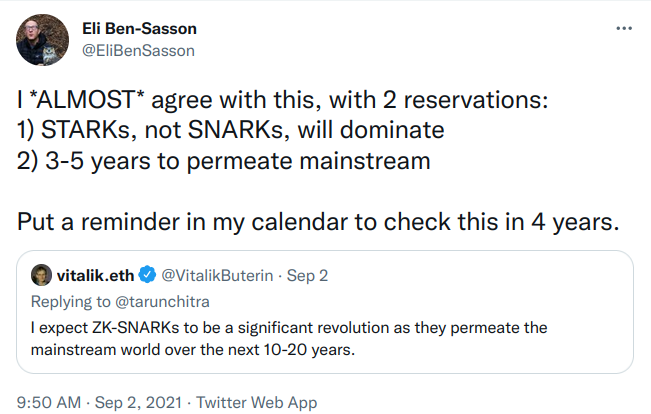

Anatomy of a STARK, Part 0: Introduction
Anatomy of a STARK, Part 0: Introduction
One of the most exciting recent advances in the field of cryptographic proof systems is the development of STARKs. It comes in the wake of a booming blockchain industry, for which proof systems in general seem tailor-made: blockchain networks typically consist of mutually distrusting parties that wish to transact, or generally update collective state according to state evolution rules, using secret information. Since the participants are mutually distrusting, they require the means to verify the validity of transactions (or state updates) proposed by their peers. Zk-SNARKs are naturally equipped to provide assurance of computational integrity in this environment, as a consequence of their features:
- zk-SNARKs are (typically) universal, meaning that they are capable of proving the integrity of arbitrary computations;
- zk-SNARKs are non-interactive, meaning that the entire integrity proof consists of a single message;
- zk-SNARKs are efficiently verifiable, meaning that the verifier has an order of magnitude less work compared to naïvely re-running the computation;
- zk-SNARKs are zero-knowledge, meaning that they do not leak any information about secret inputs to the computation.

Zk-SNARKs have existed for a while, but the STARK proof system is a relatively new thing. It stands out for several reasons:
- While traditional zk-SNARKs rely on cutting-edge cryptographic hard problems and assumptions, the only cryptographic ingredient in a STARK proof system is a collision-resistant hash function. As a result, the proof system is provably post-quantum under an idealized model of the hash function 1. This stands in contrast to the first generation of SNARKs which use bilinear maps and are only provably secure under unfalsifiable assumptions.
- Traditional zk-SNARKs rely on a trusted setup ceremony to produce public parameters. After the ceremony, the used randomness must be securely forgotten. The ceremony is trusted because if the participants refuse or neglect to delete this cryptographic toxic waste, they retain the ability to forge proofs. In contrast, STARKs have no trusted setup and hence no cryptographic toxic waste.

In this tutorial I attempt to explain how many of the pieces work together. This textual explanation is supported by a python implementation for proving and verifying a simple computation based on the Rescue-Prime hash function. After reading or studying this tutorial, you should be able to write your own zero-knowledge STARK prover and verifier for a computation of your choice.
Why another tutorial?
It should be noted early on that there are a variety of sources for learning about STARKs. Here is an incomplete list.
- The scientific papers on FRI, STARK, DEEP-FRI
- A multi-part tutorial by Vitalik Buterin (parts I/II/3)
- A series of blog posts by StarkWare (parts 1, 2, 3, 4, 5)
- The STARK @ Home webcasts by StarkWare
- The STARK 101 online course by StarkWare
- The EthStark documentation by StarkWare
- generally speaking, anything put out by StarkWare
With these sources available, why am I writing another tutorial?
The tutorials are superficial. The tutorials do a wonderful job explaining from a high level how the techniques work and conveying an intuition why it could work. However, they fall short of describing a complete system ready for deployment. For instance, none of the tutorials describe how to achieve zero-knowledge, how to batch various low degree proofs, or how to determine the resulting security level. The EthSTARK documentation does provide a complete reference to answer most of these questions, but it is tailored to one particular computation, does not cover zero-knowledge, and does not emphasize an accessible intuitive explanation.
The papers are inaccessible. Sadly, the incentives in scientific publishing are set up to make scientific papers unreadable to a layperson audience. Tutorials such as this one are needed then, to make those papers accessible to a wider audience.
Sources are out of date. Many of the techniques described in the various tutorials have since been improved upon. For instance, the EthSTARK documentation (the most recent document cited above) describes a DEEP insertion technique in order to reduce claims of correct evaluations to those of polynomials having bounded degrees. The tutorials do not mention this technique because they pre-date it.
I prefer my own style. I disagree with a lot of the symbols and names and I wish people would use the correct ones, dammit. In particular, I like to focus on polynomials as the most fundamental objects of the proof system. In contrast, all the other sources describe the mechanics of the proof system in terms of operations on Reed-Solomon codewords2 instead.
It helps me to make sense of things. Writing this tutorial helps me systematize my own knowledge and identify areas where it is shallow or wholly lacking.
Required background knowledge
This tutorial does re-hash the background material when it is needed. However, the reader might want to study up on the following topics because if they are unfamiliar with them, the presentation here might be too dense.
- finite fields, and extension fields thereof
- polynomials over finite fields, both univariate and multivariate ones
- the fast fourier transform
- hash functions
Roadmap
- Part 1: STARK Overview
- Part 2: Basic Tools
- Part 3: FRI
- Part 4: The STARK Polynomial IOP
- Part 5: A Rescue-Prime STARK
- Part 6: Speeding Things Up
Acknowledgements
The author wishes to thank Bobbin Threadbare and Thorkil Værge for useful feedback and comments, as well as Nervos Foundation for financial support. Send him an email at alan@nervos.org or follow @aszepieniec on twitter.
-
In the literature, this idealization is known as the quantum random oracle model. ↩
-
A Reed-Solomon codeword is the vector of evaluations of a low degree polynomial on a given domain of points. Different codewords belong to the same code when their defining polynomials are different but the evaluation domain is the same. ↩